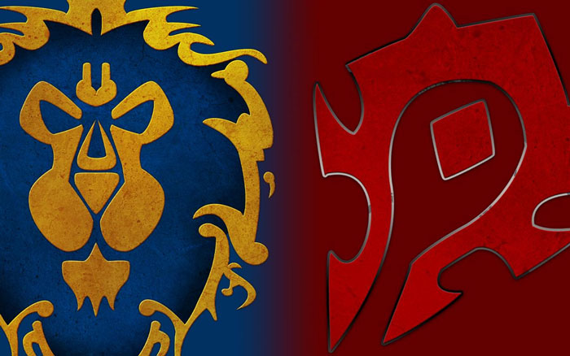

World of Warcraftin maailmassa pelaaja voi asettua joko Liittouman (Alliance) tai Lauman (Horde) puolelle. Kummaltakin puolelta löytyy rotunsa (race), joille on kaikille kirjoitettu laaja taustatarina. Rodun valinta vaikuttaa hahmon aloituspaikkaan ja joihinkin taitoihin, mutta peli ei sisällöisesti muutu kovin oleellisesti eri roduilla pelatessa. Rodun valinnan jälkeen valitaan omalle hahmolle hahmoluokka, nimi ja ulkonäkö. Liittouman rotuja ovat ihminnen, yöhaltia, kääpiö, maahinen, draenei ja worgen. Rauman rodut ovat örkki, taureeni, epäkuollut, peikko, verihaltia ja hiisi. Lisäksi kummallekin puolelle sopivaa rotua: pandareeni ja dracthyr. Battle for Azeroth esitteli myös liittolaisrotuja, joiden avaamiseksi on täytettävä pelin sisäisiä ehtoja tavallisilla roduilla.
Erilaiset rodut (races)
Hahmot saavat kehittyessään eli tasoja kerätessään useita erilaisia kykyjä ja taitoja, jotka vaikuttavat pelaamisen huomattavasti.
World of Warcaftissa on paljon erilaisia toimintoja, jotka esitellään pelaajalle tämän noustessa korkeammalle tasolle (level).
Esimerkiksi tasolla 10 pelaaja pystyy osallistumaan Liittouman ja Lauman välisiin taisteluihin taistelukentillä (battlegrounds)
Pelaaja voi käydä läpi myös instanssi-luolastoja (instances, dungeons) tasolta 10 alkaen ja tasolla 15 pelaajalle avautuu mahdollisuus liittyä automaattisesti niihin pyrkiviin ryhmiin.
Suurin osa World of Warcraftin peluusta liittyy tehtävien (quest) tekemiseen, joita saa pelin NPC-hahmoilta.
Tehtävästä saa usein palkinnon, joka voi olla esimerkiksi rahaa tai esineitä. Lisäksi lähes kaikista tehtävistä saa kokemuspisteitä (experience points). Tehtävillä selvennetään myös pelin juonta.
Suuri osa tehtävistä on niin kutsuttuja ketjutehtäviä, joissa uusi tehtävä jatkaa suoritetussa tehtävässä esitettyä tarinaa.
Tehtävät saattavat olla muun muassa erilaisten esineiden ja aineiden keräilyä, paikkojen etsimistä, tietylle henkilölle puhumista, tietyssä paikassa käymistä tai tiettyjen vihollisten tappamista.
Pelata voi myös yksin, mutta halutessaan pelaaja voi muodostaa ryhmän toisten pelaajien kanssa ja suorittaa tehtäviä, jotka yksin pelatessa olisivat liian haastavia.
Ryhmässä pelatessaan pelaaja ottaa usein tietyn roolin asioiden onnistumiseksi. Pelissä voi perustaa myös killan, johon voi kutsua ystäviä, suunnitella oman vaakunan ja ostaa oman kiltapanki, johon killan jäsenet voivat varastoida tavaroita ja rahaa.
Kiltalaiset saavat uusia kykyjä ja he voivat myös ostaa erilaisia palkintoja. Monien palkintojen ostamiseksi kiltalainen tarvitsee kuitenkin myös mainetta killalle.
Kun pelaaja kuolee, hänen hahmonsa ilmestyy haamuna lähimmälle hautuumaalle.
Toiset pelaajat voivat herättää muita pelaajia henkiin, kahdella pelin hahmolla on myös mahdollisuus ylösnousuun, jolloin toinen voi antaa jollekin toiselle pelaajalle väliaikaisen ylösnousemisen kyvyn.
Pelaajan kuollessa hänen käyttämänsä esineet alkavat hajota ja näin ollen vaatia korjausta, jonka tietyt NPC-hahmot voivat suorittaa rahaa vastaan.
Jos hahmon ruumis on paikassa, johon ei pääse tai jos pelaajalla on jokin muu syy, on mahdollista käyttää hautuumaalla olevaa Spirit Healer -NPC-hahmoa elvyttämään hahmo.
Graveyard / hautausmaa
Hahmon luonnissa pelaaja valitsee hahmoluokan (class). Tässä vaiheessa hän voi vaikuttaa siihen, mitä roolia haluaa pelata. Hahmoluokkia on pelissä yksitoista, ja ne ovat kummankin puolen käytettävissä. Myös rodut (race) vaikuttavat hahmoluokan valintaan, sillä kaikki hahmoluokat eivät ole jokaisen rodun käytettävissä. Pelaaja voi muokata hahmoluokkansa kykyjä ja ominaisuuksia taitopisteillä (talents). Pelaajan tulee erikoistua tiettyyn kykypuuhun, joita jokaisella hahmoluokalla on kolme, paitsi druideilla neljä. Kykypuun valinta vaikuttaa suuresti hahmon pelattavuuteen ja siihen, minkä roolin hahmo voi tällöin ryhmässä ottaa. Pelin alkuperäinen tasokatto oli 60 ja nousi seitsemän ensimmäisen lisäosan myötä 120:een. Shadowlandsissä tasokatto alennettiin takaisin 60:een ja tason 120 pelaajat palautuvat takaisin tasolle 50. Nykyinen tasokatto on 70.
Druidi (druid) on hyvin monipuolinen hahmoluokka, sillä se voi asettua mihin tahansa pelin taistelurooleista. Druidin rooli riippuu käytössä olevasta taitopuusta. Druidin pelaaminen perustuu hahmon olomuodon vaihtamiseen tilanteen mukaan, jolloin hahmon päätehtävä muuttuu muotoa vastaavaksi. Druidi voi muuttaa ulkomuotonsa esimerkiksi fyysistä vahinkoa hyvin kestäväksi karhumuodoksi (Bear form), kovaa vahinkoa tekevään kissamuotoon (Cat Form), nopeaan lentävään lintumuotoon (Flight Form) tai taikoja tekevään pöllömuotoon (Moonkin Form).
Metsästäjä (hunter) on puolestaan fyysistä vauriota etäisyydeltä aiheuttamaan painottunut hahmoluokka. Metsästäjä on erikoistunut mm. jousien ja tuliaseiden käyttöön. Metsästäjä pystyy kesyttämään itselleen lemmikin pelin pedoista ja käyttämään sitä esimerkiksi sitoakseen vastustajansa lähitaisteluun. Lemmikeillä itsellään on myös erilaisia taitoja. Lisäksi metsästäjät voivat ansoittaa maastoa.
Maagi (mage) on vauriota etäisyydeltä aiheuttamaan painottunut hahmoluokka. Maagilla on käytettävissään runsaasti loitsuja aina tulesta ja jäästä salaisiin voimiin (Arcane Magic). Vaurioloitsuilla maagit voivat joko keskittyä vahingoittamaan yksittäistä vihollista tai jopa kaikkia tietyllä alueella olevia vihollisia. Maagi tekee pelissä suurta vauriota, mutta sen heikkous on huono kestävyys.
Paladiini (paladin) on hybridiluokka, joka voi kykypuun valinnoilla toimia parantajana, vahingon tuottajana tai vastaanottajana eli tankkina. Raskaasti haarniskoituneina paladiinit ovat pelin sitkeähenkisimpiä hahmoja erityiskykyjensä ansiosta, joilla he voivat esim. muuttaa itsensä väliaikaisesti vahingoittumattomaksi tai loihtia erittäin voimakkaan parannustaian.
Pappi (priest) on hahmoluokka, jolla on kaksi tehtävää, vahingon tekeminen tai parantaminen. Papilla on käytössään myös tehokkaita vihollisten hallintataikoja (crowd control (CC) ), jotka tekevät vihollisen hetkellisesti puolustuskyvyttömäksi, esimerkiksi kontrolloimalla vihollisen mieltä.
Rosvo (rogue) voi tiirikoida lukkoja sekä varastaa esineitä tai rahaa NPC-vastustajilta. rosvon tärkein ominaisuus on hiipimiskyky (Stealth), joka on myös joidenkin taitojen edellytys. Rosvo on heikko joutuessaan hyökkäyksen kohteeksi, mutta sen hyvinä puolina pidetään piiloutumis- ja salamannopeita lähitaistelutaitoja.
Shamaani (shaman) osaa parantaa, tehdä vahinkoa lähitaistelussa ja myös tehdä kauemmas ulottuvia vahinkoloitsuja. Shamaanin tärkeimpiä taitoja ovat toteemit (totem). Niiden avulla shamaani voi saada itselleen tai tuoda ryhmäänsä parannusta tai manaa, parantaa lähitaisteluvoimaansa, parantaa puolustusta ja maagisia voimia ja tuoda lisää tuhovoimaa. Shamaani pystyy herättämään muita pelaajia henkiin ja ainoana pelattavana hahmoluokkana suorittamaan uudelleensyntymän käyttämällä erityistä Ankh-avainta.
Manaajavelho (warlock) on maagista pimeiden voimien vauriota etäisyydeltä aiheuttamaan painottunut hahmoluokka. Manaajavelhot ovat keskittyneet pimeisiin voimiin kuten demoneihin ja kirouksiin. Manaajavelhon erikoisuus on kyky imeä muilta hahmoilta elinvoimaa, ja he pystyvät muuntamaan omaa elinvoimaansa manaksi. Apureinaan manaajavelhot käyttävät erilaisia demoneita. Manaajavelhon aiheuttama vaurio perustuu voimakkaisiin kirouksiin, jotka aiheuttavat vastustajille vahinkoa ajan kuluessa, sekä demonien apuun.
Soturin (warrior) kykypuut keskittyvät kahteen tehtävään, vahingon aiheuttamiseen tai vahingon vastaanottamiseen. Soturi on paladiinin ja kuolonritarin ohella fyysisesti kestävin hahmoluokka, johtuen kyvystä käyttää raskasta levypanssaria. Soturit ovat kestäviä myös vahingontekoroolissa. Soturien kyvyt perustuvat raivoon, joka kasvaa taistelun edetessä.
Kuolonritari (death knight) on Wrath of the Lich King -lisäosassa ilmestynyt pelin ensimmäinen sankarihahmoluokka. Sankarihahmoluokkaan tarvitaan jo ennestään käytössä oleva hahmo, ja kuolonritariin tarvittavan hahmon kokemustason oli alun perin oltava vähintään 55 (pandareeneilla ja liittolaisroduilla aloitustaso on 10, mutta muille pääroduille tuli Shadowlands-lisäosassa uudeksi aloitustasoksi 8). Kuolonritari voi toimia samoissa rooleissa kuin soturi. Kuolonritari on fyysisesti voimakas ja on tarkoitettu käyttämään levypanssaria. Kuolonritari on lähitaistelija, mutta kykenee myös loitsimaan. Nämä ovat hyvin usein rutto- tai tautityyppisiä loitsuja. Yksi kuolonritarin kyvyistä on epäkuolleen apurin (Ghoul) nostattaminen.
Munkki (monk) on Mists of Pandaria -lisäosassa ilmestynyt hybridiluokka. Heidän taitonsa perustuvat joko aseiden kera tai ilman niitä toimiviin taistelulajeihin. Munkit ammentavat voimaa chi-energiasta. He pystyvät sekä vahingoittamaan vastustajia että puolustamaan tai parantamaan muita.
Demoninmetsästäjä ( demon hunter) on Legion-lisäosassa ilmestynyt pelin toinen sankarihahmoluokka. Demoninmetsästäjään tarvittavan ennestään käytössä olevan hahmon kokemustason oli alun perin oltava vähintään 98 (kunnes Shadowlands-lisäosassa uudeksi aloitustasoksi tuli 8). Demoninmetsästäjä tehostaa itseään lähitaistelussa demonisella tulella sekä muilla surmatuilta demoneilta viedyillä voimilla.
Loihtija (evoker) on Dragonflight-lisäosassa ilmestynyt pelin kolmas sankarihahmoluokka. Se voi toimia joko pitkän kantaman taistelijana tai parantajana. He käyttävät uudenlaisia Empower-nimityksellä tunnettuja loitsuja. Loihtija aloittaa tasolla 58 (Shadowlandsissä tapahtuneen tasokaton laskemisen johdosta), mutta tarvitsee ennestään käytössä olevan hahmon, jonka kokemustaso on vähintään 50.
Erilaiset hahmoluokat (classes) mitä voit tehdä missäkin rodussa (races)
Choose your faction / Valitse sinun ryhmäsi
